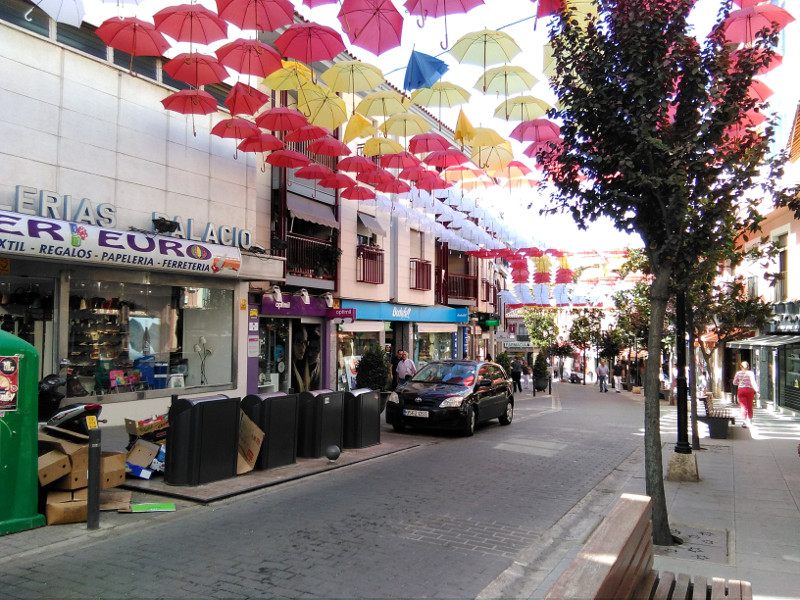

Pequeño comercio Valdepeñas
El comercio
Desde años inmemoriales el trueque era la manera en que las antiguas civilizaciones empezaron a comerciar. Mediante este se intercambiaba mercancías según las necesidades de los individuos. A la vez que el trueque fue evolucionando modificando intercambio de bienes de igual valor por el intercambio de dinero, la forma y el método de los comerciantes también ha evolucionado con los años. El comercio ha evolucionado de manera impensable ya que hemos pasado de personas vendiendo de forma callejera todo tipo de productos a las grandes superficies que pueden proporcionarnos de un plumazo lo imprescindible para cubrir todas nuestras necesidades. Pero no podemos olvidar el motor de nuestra economía que siempre se ha basado en los pequeños comercios especializados que han alimentado nuestros pueblos y ciudades. Por ello esta pagina nos viene a descubrir la gran variedad de comercios que componen la vida comercial en Valdepeñas.
